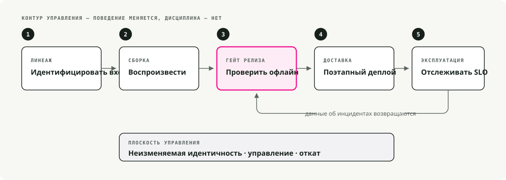
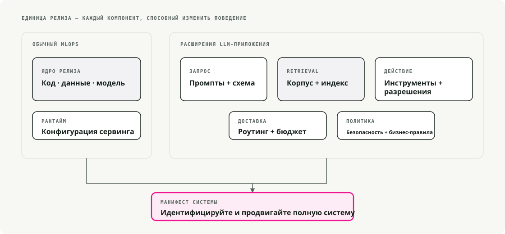
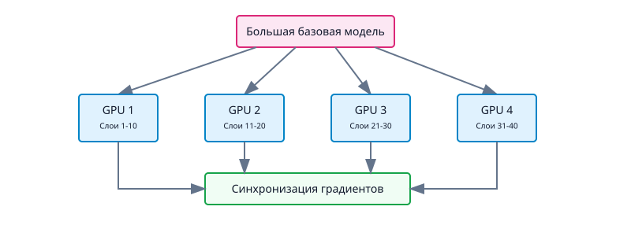
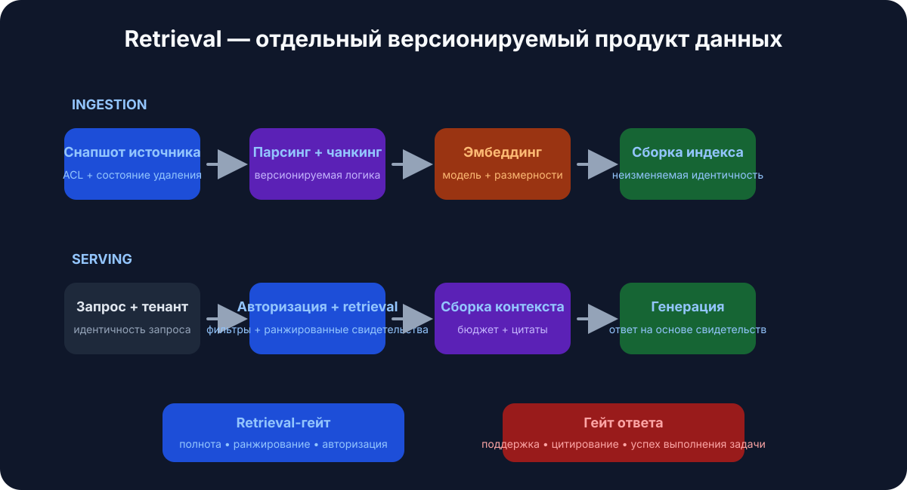
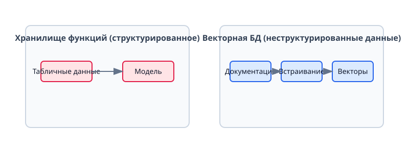
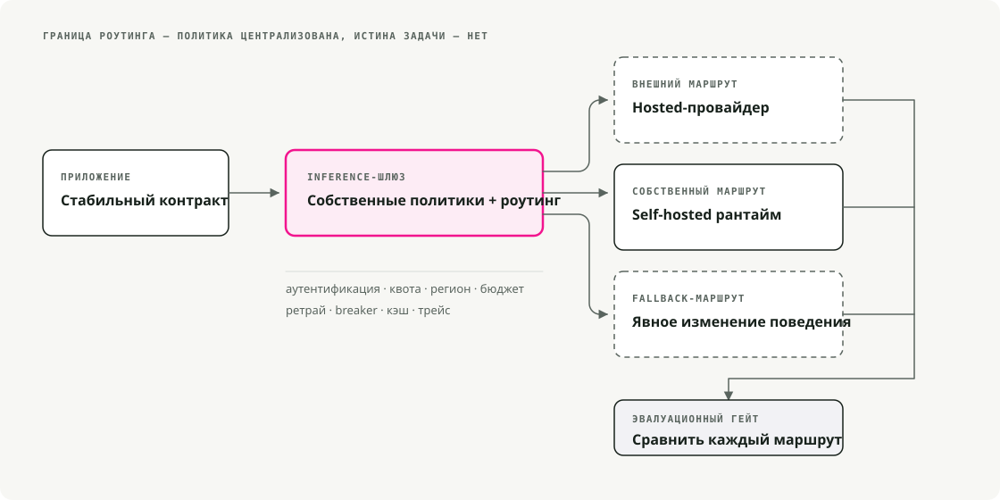
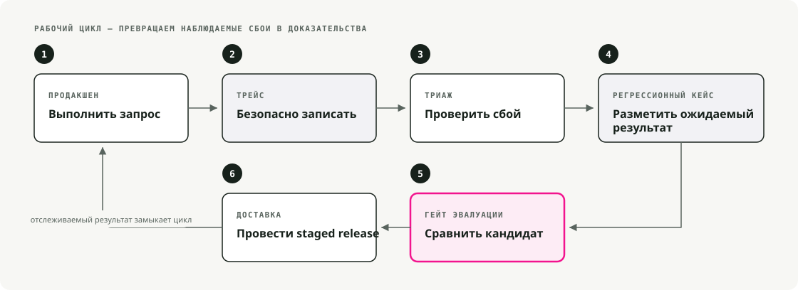

Автоматический перевод
Эта статья была автоматически переведена с оригинальной английской версии.
MLOps vs LLMOps: инфраструктура для foundation models и LLM-систем
Foundation models сломали большинство допущений, на которых строился классический MLOps. Ниже — разбор того, что изменилось, что осталось, и какие паттерны закрыли образовавшийся разрыв.
Классический MLOps до foundation models
Несколько лет назад MLOps в основном означал DevOps для ML — автоматизацию жизненного цикла от подготовки данных до деплоя и мониторинга. Модели были достаточно маленькими, чтобы обучать их с нуля на доменных данных, и инфраструктура это отражала.

1.1. End-to-end pipeline'ы
Команды строили pipeline'ы для извлечения данных, обучения, валидации и деплоя. Airflow управлял ETL и оркестрацией обучения. CI/CD запускал тесты и выкатывал модели в production. Модели поставлялись как Docker-контейнеры с REST endpoint'ами или batch jobs. Смысл всего этого был в воспроизводимости и автоматизации.
1.2. Трекинг экспериментов и версионирование моделей
MLflow и Weights & Biases были стандартом для логирования запусков, гиперпараметров и метрик. Data scientists могли сравнивать эксперименты и надежно воспроизводить результаты. Model registry давал номера версий, поэтому rollback был простым, если новая модель оказывалась хуже.
1.3. Continuous training и CI/CD
Pipeline'ы были ориентированы на непрерывную интеграцию новых данных. Типичная схема: nightly или weekly retraining по мере поступления данных, прогон набора тестов и auto-deploy, если все прошло успешно. Jenkins и GitLab CI/CD гарантировали, что любое изменение в данных или коде надежно запускает pipeline.
1.4. Инфраструктура и serving
Serving был относительно компактным — несколько CPU cores или одна GPU для real-time inference. Kubernetes и Docker были стандартом для масштабируемых inference-сервисов. Мониторинг покрывал три вещи: performance metrics (latency, throughput, memory), model metrics (accuracy, drift) и system health (uptime, error rates).
1.5. Feature stores и управление данными
Для finance и e-commerce инженерные признаки были не менее важны, чем сама модель. Feature stores давали центральное место для их управления и обеспечивали консистентность между training и serving. Центром архитектуры были structured data и feature engineering. Неструктурированные данные — text, images — обрабатывались отдельно, вне этих хранилищ.
Эта схема работала нормально, пока модели не стали гораздо больше.
2. Смена парадигмы: рост large-scale foundation models
Примерно в 2018–2020 картина быстро изменилась. Исследователи начали выпускать foundation models — очень большие модели, предобученные на широких корпусах данных и пригодные для адаптации ко множеству задач.
Развитие было быстрым:
- 2018–2019: BERT и GPT-2 сделали transfer learning на масштабе по-настоящему убедительным.
- 2020–2021: GPT-3 и PaLM показали, что дает голый масштаб.
- 2021–2023: Модели для изображений вроде DALL-E и Stable Diffusion вывели generative AI в мейнстрим.
- 2023–2024: Foundation models стали инфраструктурой по умолчанию — доступны на Hugging Face, AWS Bedrock, Vertex AI Model Garden и напрямую у API-провайдеров.

Вот что именно foundation models изменили в ML-инфраструктуре.
2.1. Pretrained лучше, чем обучение с нуля
Вместо обучения с нуля команды начали брать pretrained model и fine-tune'ить ее под задачу. Время обучения сократилось с недель до часов. Требования к данным упали с миллионов примеров до тысяч. Небольшие команды смогли выпускать серьезные AI-продукты без собственной research-организации.
Самые большие модели (миллиарды параметров) обычно используют как есть через API или дообучают с помощью легких adapter'ов. Изменилось само описание работы: меньше вопроса «как мне построить модель?» и больше — «как мне ее использовать и интегрировать?»
2.2. Размер моделей и вычислительные требования
На масштабе LLM приходится менять и остальной стек. Модель на 175B параметров — это не просто увеличенная версия модели на 50M: она не помещается на то же железо, не обучается тем же способом и не обслуживается так же.
Основные сложности:
- Training требует мощного железа (GPUs, TPUs) и distributed compute.
- Model parallelism шардирует одну модель по нескольким GPU.
- Data parallelism синхронизирует множество GPU workers во время обучения.
- Inference часто требует нескольких GPU или специализированных runtime'ов, чтобы удерживать latency в разумных пределах.
DeepSpeed и ZeRO (Zero Redundancy Optimizer) появились именно для того, чтобы сделать обучение огромных моделей практичным. Требования к инфраструктуре выросли на порядки.
2.3. Появление LLMOps
Работа с такими моделями в production потребовала расширения классического MLOps. Так появился LLMOps — MLOps, специализированный для больших моделей, с теми же принципами, но с другой поверхностью проблем:
- Compute: управление дорогими GPU-кластерами, а не пулами CPU.
- Prompt engineering: управление поведением через дизайн входа.
- Safety monitoring: детектирование bias, harmful content и утечек данных.
- Performance management: баланс между latency, quality и cost per token.
Проблемы, которые почти не были заметны у маленьких моделей — biased text, leakage обучающих данных — на масштабе LLM стали реальными рисками.

Диаграмма NVIDIA хорошо показывает, как эти специализации вложены друг в друга: снаружи классический MLOps, затем GenAI Ops (любая generative model), затем LLMOps (конкретно large language models), затем RAGOps для retrieval-augmented систем. Смысл этой вложенности в том, что каждый внутренний слой опирается на практики внешнего — а не заменяет их.
2.4. Foundation models как сервис
Второй большой сдвиг: многие приложения больше не хостят свои модели, а вызывают чужие. OpenAI, Cohere и AI21 Labs предлагают hosted LLMs. Google Vertex AI поставляет Model Garden с pretrained models. AWS Bedrock хостит proprietary foundation models. Hugging Face хостит тысячи open weights, которые можно скачать или запускать в облаке.
Это перестраивает архитектуру. Production pipeline'ы вызывают внешние API для inference, что избавляет от управления GPU, но приносит новые издержки:
- Latency: network round-trip добавляет overhead.
- Cost: pricing per token означает, что всплески использования напрямую бьют по счету.
- Data privacy: все, что отправляется вендору, выходит за ваш perimeter.
- Vendor lock-in: поведение API, pricing и policies вам не принадлежат.
Для большинства команд этот trade-off работает. Поддержка собственного LLM serving stack — это серьезная инженерная инвестиция, и не всегда она вам нужна.
3. Новые требования и возможности современной ML-инфраструктуры
Современная ML-инфраструктура должна поддерживать вещи, которые еще несколько лет назад были нишевыми или вовсе не существовали. Чаще всего встречаются следующие.
3.1. Distributed training и model parallelism
Обучение модели на миллиард параметров уже выходит за пределы возможностей одной машины. Современная инфраструктура оркестрирует обучение на множестве узлов:

Есть два основных типа разбиения:
- Model parallelism: слои модели разделяются между GPU (каждая GPU исполняет часть forward pass).
- Data parallelism: модель реплицируется на GPU, тренировочные данные делятся между ними, после чего синхронизируются градиенты.
PyTorch Lightning и Horovod закрывают general distributed training. NVIDIA Megatron-LM — стандартный выбор для massive transformers. Стек Google JAX/TPU покрывает TPU-кластеры.
Еще несколько лет назад большинство команд обучали модели на одном сервере. Теперь ML-платформы запускают jobs на GPU-кластерах, управляют сбоями и агрегируют градиенты от десятков или сотен workers без необходимости думать об этом на уровне инженера.
3.2. Эффективные техники fine-tuning
Даже fine-tuning модели на несколько миллиардов параметров может быть дорогим. Для этого и существуют parameter-efficient методы:
- LoRA (Low-Rank Adaptation): обучается небольшой набор adapter-параметров; базовые веса остаются frozen. Большое снижение compute и memory.
- Prompt tuning: оптимизируются только prompt embeddings; сама модель frozen.
- Adapter modules: между frozen-слоями вставляются небольшие обучаемые слои.
Конфигурация LoRA с peft:
from peft import LoraConfig, get_peft_model
# Configure LoRA
peft_config = LoraConfig(
r=16,
lora_alpha=32,
target_modules=["q_proj", "v_proj"],
lora_dropout=0.05,
bias="none",
task_type="CAUSAL_LM"
)
# Apply to base model
model = get_peft_model(base_model, peft_config)
model.print_trainable_parameters()
Инфраструктура должна поддерживать многошаговый workflow: взять базовую модель из hub, применить fine-tuned weight deltas, задеплоить объединенный результат. Традиционные pipeline'ы пришлось развивать, чтобы они умели этот шаг кастомизации.
3.3. Prompt engineering и управление prompt'ами
Новый артефакт в современных ML pipeline'ах — это prompt. В случае LLM именно prompt в значительной степени определяет поведение модели — намного сильнее, чем feature vectors в классическом ML.
У этого есть практические последствия. Команды теперь поддерживают библиотеки prompt'ов, версионируют их как код, проводят A/B-тестирование вариантов и хранят версии prompt'ов рядом с версиями моделей в registry. Это действительно отличается от классического ML, где входы были просто feature vectors. Framework'и вроде LangChain рассматривают оптимизацию prompt'ов как first-class feature.
Простая эволюция выглядит так:
v1: "Classify this text as positive or negative: {text}"
v2: "You are a sentiment analyzer. Classify: {text}"
v3: "Analyze sentiment. Return only 'positive' or 'negative': {text}"
Каждая версия дает разные результаты. В итоге трекинг и тестирование prompt'ов становятся не менее важными, чем трекинг весов модели.
3.4. Retrieval-Augmented Generation (RAG)
У foundation models есть фиксированный knowledge cutoff и конечное context window. Чтобы ответы оставались актуальными и grounded, Retrieval-Augmented Generation (RAG) стал стандартной практикой.

Вместо постоянного retraining модели на новых данных — что медленно и дорого — RAG извлекает релевантные документы во время запроса и добавляет их в prompt как контекст.
Упрощенная RAG-цепочка в LangChain:
from langchain.vectorstores import Pinecone
from langchain.llms import OpenAI
from langchain.chains import RetrievalQA
# 1. Load the vector database
vector_db = Pinecone.from_existing_index("my-index", embeddings)
# 2. Initialize the LLM
llm = OpenAI(temperature=0)
# 3. Create the RAG chain
qa_chain = RetrievalQA.from_chain_type(
llm=llm,
chain_type="stuff",
retriever=vector_db.as_retriever()
)
# 4. Ask a question
response = qa_chain.run("How does LLMOps differ from MLOps?")
Новые инфраструктурные компоненты:
- Vector databases (Pinecone, Weaviate, FAISS, Milvus) для быстрого similarity search по embeddings.
- Embedding models для преобразования документов и запросов во векторы.
- Index management для синхронизации embeddings с source of truth.
Vector databases во многом заняли ту роль, которую раньше играли традиционные feature stores. Теперь ключевая зона активности — не manual feature engineering, а неструктурированные данные и semantic search.
3.5. Data streaming и real-time data feeds
Современные приложения — особенно LLM-powered assistants — получают данные непрерывно: chat conversations, sensor data, event streams. Эти данные должны обновлять knowledge модели (через RAG) или в реальном времени триггерить ответы.
Классический MLOps был batch-oriented (ежедневный или еженедельный retraining). Современный LLMOps чаще stream-oriented: Kafka и event streaming platforms, real-time databases (Redis, DynamoDB), online feature stores с непрерывными обновлениями и streaming embedding pipelines, поддерживающие свежесть vector index'ов.
Граница между data engineering и MLOps размылась. Data pipeline'ы теперь напрямую питают inference, а не только обучение.
3.6. Масштабируемая и специализированная инфраструктура serving
Serving большой модели — это отдельный инженерный проект. Критичны три возможности.
High-throughput, low-latency serving. Интерактивным приложениям нужны быстрые ответы. Это означает GPU/TPU-ускорение, model quantization для сжатия весов и ускорения inference, GPU batching для параллельного обслуживания нескольких запросов и оптимизированные движки вроде NVIDIA TensorRT, Triton Inference Server или DeepSpeed-Inference.
Serverless и elastic scaling. Платформы вроде Modal позиционируют себя как «AWS Lambda, но с поддержкой GPU» — вы приносите код, они берут на себя инфраструктуру и scaling. Вы не платите за idle servers, compute поднимается по запросу, масштабируется до нуля при отсутствии нагрузки и растет под нагрузкой. Компромиссы — cold-start latency, statelessness и меньший контроль над runtime. Это хороший вариант для нерегулярных нагрузок, когда нет смысла держать GPU-кластер прогретым.
Distributed model serving. Для моделей, слишком больших для одной GPU, даже inference становится распределенным. Модель шардируется по нескольким машинам, и каждая обрабатывает часть forward pass. Serving модели на 175B параметров on-prem практически требует кооперации нескольких GPU. Современная инфраструктура должна уметь поднимать distributed inference replicas и маршрутизировать запросы к нужному shard'у.
3.7. Мониторинг, observability и guardrails
Большие модели могут выдавать неверные или небезопасные ответы так, как маленькие модели не могли. Теперь у мониторинга три слоя.
Performance и reliability. Базовые вещи никуда не делись: latency, throughput, memory, GPU utilization, cost. Autoscaling стал важнее, потому что GPU-минуты дороги — при нагрузке можно откатываться на более маленькую модель, если большая не оправдывает очередь.
Качество выходов и безопасность. Теперь нужно следить за тем, что модель говорит, а не только за тем, ответила ли она. Content filtering для hate speech, PII и harmful content. Moderation API (OpenAI или собственные). Непрерывная оценка bias. Guardrails, которые перехватывают adversarial inputs и удерживают outputs в допустимых границах. В production LLMOps все это уже не опционально.
Feedback loops. Непрерывное улучшение теперь включает людей. Собирать interactions (likes, corrections, ratings), использовать их для fine-tuning или корректировки prompt'ов, а для high-stakes systems запускать RLHF (Reinforcement Learning from Human Feedback), чтобы закодировать предпочтения в модель. Инфраструктура должна безопасно собирать и управлять этими feedback-данными.
4. Эволюция системной архитектуры и design patterns
С учетом всех этих новых требований как сегодня на практике строятся ML-системы? Постоянно повторяются несколько паттернов.
4.1. Модульные pipeline'ы и orchestration
Классические инструменты (Kubeflow Pipelines, Apache Airflow) по-прежнему используются для workflow fine-tuning, batch scoring и периодического retraining. Более новые инструменты — Metaflow, Flyte, ZenML — дают Pythonic workflows, которые напрямую подключаются к ML-библиотекам. Для low-latency inference application code часто полностью заменяет heavyweight workflow engine.
Практическое изменение простое: инженерам больше не нужно выходить из своей среды разработки, чтобы управлять путем от данных до деплоя.
4.2. Model hubs и registry
Управление моделями сместилось в централизованные hub'ы. Hugging Face Hub хостит тысячи моделей, датасетов и скриптов — единая точка доступа с plug-and-play архитектурой (получение моделей при старте). Внутренние registry, такие как MLflow и SageMaker Model Registry, управляют кастомными моделями, часто в сочетании с внешними foundation models.
Сдвиг в том, что вместо полного build in-house инженеры планируют, как fine-tune'ить и адаптировать сторонние модели. Это другой способ мышления — и гораздо более быстрый.
4.3. Feature stores vs. vector databases
Слой данных изменил форму:

Традиционные feature stores работали со structured data и manual feature engineering. Современные vector databases (Pinecone, Weaviate, Chroma, Milvus) работают с high-dimensional embeddings, быстрым similarity search, semantic deduplication и RAG.
В реальных системах вы увидите и то и другое: vector DB для неструктурированного семантического поиска и data warehouse для структурной аналитики. Это не взаимозаменяемые вещи.
4.4. Unified platforms (end-to-end)
Сложность современного ML подтолкнула команды к end-to-end платформам, абстрагирующим инфраструктурный слой.
Крупные облачные платформы активно в это инвестировали:
- Google Vertex AI: auto-distributed training на TPU pods, Model Garden с LLM, деплой в один клик.
- AWS SageMaker: distributed training, model parallelism, плюс Bedrock для hosted foundation models.
- Azure ML: интегрированные training, deployment и monitoring.
Они дают managed services вида «дообучи эту модель на 20B параметров на своих данных» или «построй embeddings и индекс для своего текста под retrieval». Рядом развивается open-source и startup tooling: MosaicML (теперь Databricks) для эффективного обучения и деплоя больших моделей, Argilla и Label Studio для data labeling и создания prompt datasets, ClearML и MLflow для experiment tracking, связанного с выполнением pipeline'ов.
4.5. Inference gateways и API
Когда у вас появляются модели разных размеров, нужен способ умно маршрутизировать запросы. Это и есть inference gateway:

Полезен для маршрутизации по latency-требованиям, выдачи разных моделей разным subscription tiers, A/B-тестирования новых моделей на доле трафика и fallback на более маленькие модели при высокой нагрузке. Gateway отделяет client-facing API от реализации модели, поэтому замены и эксперименты становятся гораздо менее болезненными.
4.6. Agentic systems
Самый новый паттерн — AI agents: системы, которые динамически выбирают последовательности действий вместо выполнения фиксированной цепочки. Агент может вызывать внешние инструменты (calculators, search engines, databases), определять workflow во время выполнения на основе контекста и использовать разные модели для разных подзадач.
Framework'и вроде agent mode в LangChain, function calling в OpenAI и системы в стиле AutoGPT делают это практичным. Операционные практики, которые идут вместе с этим (иногда их называют "AgentOps"), не опциональны: мониторинг для выявления нежелательных действий, детальное логирование для трассировки путей принятия решений и guardrails, ограничивающие то, что агенту разрешено делать.

Agentic systems пока еще не получили широкого распространения в production, но значительная часть переднего края LLMOps находится именно там.
5. С чего начать в LLMOps
Если вы только входите в тему, экосистема LLMOps может показаться перегруженной. Я бы рекомендовал такой путь:
- Поиграйте с API. Начните с OpenAI или Anthropic, чтобы почувствовать prompt engineering.
- Соберите RAG-приложение. Используйте LangChain или LlamaIndex, чтобы сделать демо «Chat with your PDF». По пути вы поработаете с vector databases и retrieval.
- Попробуйте fine-tuning. Используйте Hugging Face, чтобы дообучить небольшую модель (Llama-3-8B или Mistral-7B) на кастомном датасете в Google Colab.
- Задеплойте. Сначала запустите vLLM или Ollama локально, затем перенесите в cloud provider.
6. Заключение: от MLOps к LLMOps и дальше
Базовые принципы MLOps — автоматизация, воспроизводимость, надежный deployment — никуда не делись. Изменились масштаб (миллиарды параметров), подход (адаптация foundation models вместо обучения с нуля), слой данных (vector databases делят сцену с feature stores) и поверхность мониторинга (безопасность контента, а не только latency). LLMOps вырос из этих изменений. Следующая волна — AgentOps и RAGOps — делает то же самое, но уровнем выше.